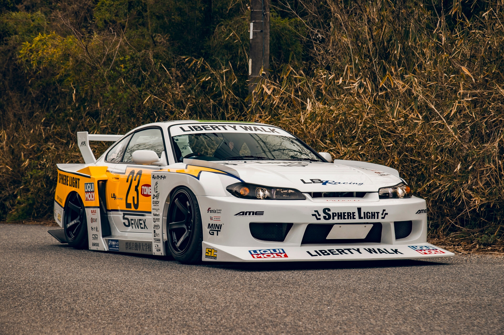

Ferrari f40
Con la visión de Enzo Ferrari y la magia de Pininfarina en el diseño, el F40 se lanzó para ser un sucesor digno del GTO. En su momento, las revistas de coches mostraban fotos espía de un prototipo en las calles de Maranello, al que se bautizó como "Evoluzione" y del que se fabricaron cinco unidades que se utilizaron para pruebas antes de dar vida al Ferrari F40 de producción. De los cinco Evoluzione, cuatro se vendieron a clientes privados, mientras que la quinta unidad permaneció en Maranello como modelo de pruebas. Finalmente revelado en 1987, el Ferrari F40 fue recibido con un entusiasmo que superó incluso las expectativas más optimistas de Ferrari. Diseñado por Pininfarina, el F40 parecía un coche sacado directamente del circuito, y aún así, estaba homologado para la calle. Además, este modelo fue el último que supervisó personalmente Enzo Ferrari antes de su fallecimiento en 1988, lo que añade un aura de leyenda a este mito.
Diseño e Interior
Diseño exterior del Ferrari F40
El diseño exterior del Ferrari F40 tomó algunas referencias sutiles de su antecesor, el GTO. Impulsó la filosofía de diseño de "coche extremo" a un nuevo nivel. Aunque el perfil alrededor del habitáculo y la línea negra satinada que recorría los laterales recordaban al 308, el diseño general rompió moldes.
La carrocería estaba construida mayoritariamente en fibra de carbono, reduciendo el peso y aumentando la rigidez, lo que se traducía en un rendimiento excepcional.
El frontal del Ferrari F40 era bajo y ancho, diseñado para cortar el aire con la máxima eficiencia; los faros escamoteables contribuyen al perfil aerodinámico y se convirtieron en una seña de identidad; en el frontal contaba con una serie de tomas de aire y rejillas de ventilación estratégicamente ubicadas que conectaban con la parte trasera para enfriar el motor y los frenos, algo esencial dadas las capacidades del vehículo.
Una característica llamativa era la luneta trasera panorámica, a través de la cual se podía ver el motor y que no era sólo una decisión estilística, sino también funcional, ya que permitía una refrigeración adicional y necesaria.

Silvia S14
Su carrocería ha sido diseñada para aumentar la carga aerodinámica en un 50% sobre los 458 mientras que reduce la resistencia aerodinámica. Un nuevo separador ("splitter") doble delantero cumple dos funciones: aumentar el enfriamiento del radiador forzando el aire hacia ellos y canalizar el aire sobre los generadores de vórtice del fondo plano para crear efecto de tierra, sin agregar arrastre no deseado. Un alerón trasero soplado de nuevo diseño, que es en realidad una solapa con ranura, integrado en la cubierta trasera y la defensa, aumenta la carga aerodinámica sin necesidad de un ala levantada. El central "Aero Pillar" desvía el aire bajo el cuerpo plano del coche, mientras que dos respiraderos en el cofre proporcionan una salida para el aire de las entradas duales de la defensa delantera, reduciendo todavía más la presión de aire sobre la parte delantera del coche.LIBERTY WALK HOKKAIDO
Open: 10:00 - 19:30
Close: Abierto
Address: 2-7-23 Ariakecho, Tomakomai 053-0812
Contact:
0144-71-1666 0144-71-1667
COPYRIGHT © 2024 LIBERTY WALK